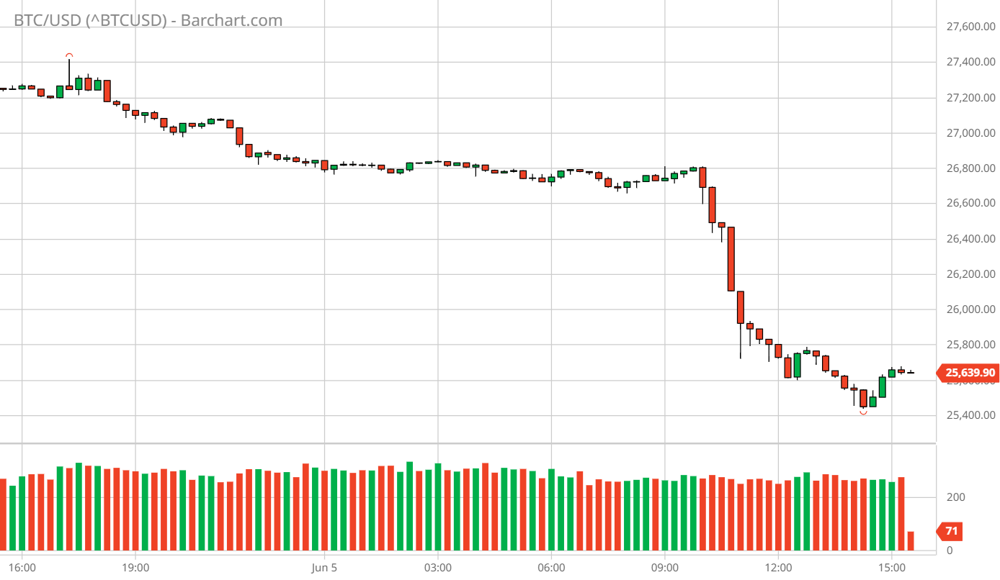
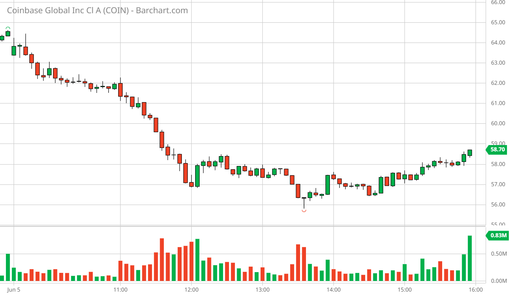

In a move that rattled the foundations of the crypto world, the Securities and Exchange Commission (SEC) has unleashed its wrath upon Binance, the behemoth of the digital realm. The SEC, draped in its cloak of authority, has charged Binance with heinous crimes against securities laws. They claim that Binance shamelessly peddled securities to unsuspecting US investors, all without seeking the SEC's stamp of approval.
The shockwaves reverberated through the cryptosphere, igniting a frenzy of fury and disbelief. The collective roar of the crypto community grew louder by the minute, their voices echoing with indignation. Calls for boycotts filled the air, a defiant response to the SEC's audacity.

BitCoin - 06/05/23 Crash After SEC Charged Binance
Yet, amidst the chaos, a darker sentiment emerged. A twisted amusement danced in the eyes of some observers. They scoffed at the SEC's tardy attempts to tame the crypto industry, branding them as feeble attempts to maintain control. Binance, they argued, was but a pawn in the SEC's grand game of domination.
The Twitterverse became a battleground of sarcasm and mockery. The SEC was dubbed "the self-proclaimed crypto police," a force hell-bent on hunting down every rebel in this digital revolution. The naysayers proclaimed the SEC as "the ultimate jester," a punchline in the comedy of the world stage, desperately trying to dismantle the very industry that dares to challenge their authority. The SEC's charges against Binance strike a blow to the crypto realm, a setback of epic proportions. Yet, the question lingers: will this be the downfall of the crypto uprising? The answer lies in the resilience of the crypto community, a fierce collective known for weathering storms of adversity.

COIN - 06/05/23 Crash After SEC Charged Binance
But perhaps, in this twisted tale, lies a silver lining. Maybe, just maybe, this clash between Binance and the SEC will fuel the fire of innovation. The crypto community thrives in adversity, transforming challenges into catalysts for change. And as the SEC dances in their ivory tower, the crypto warriors prepare for battle, fueled by their unyielding spirit and unwavering determination.
So, let the SEC charge, let the chaos ensue. The crypto realm is no stranger to adversity. It is a domain forged in defiance, where every setback fuels the hunger for a brighter future. As Binance faces the wrath of the SEC, the crypto world watches with bated breath, ready to rise from the ashes, stronger and more defiant than ever before.